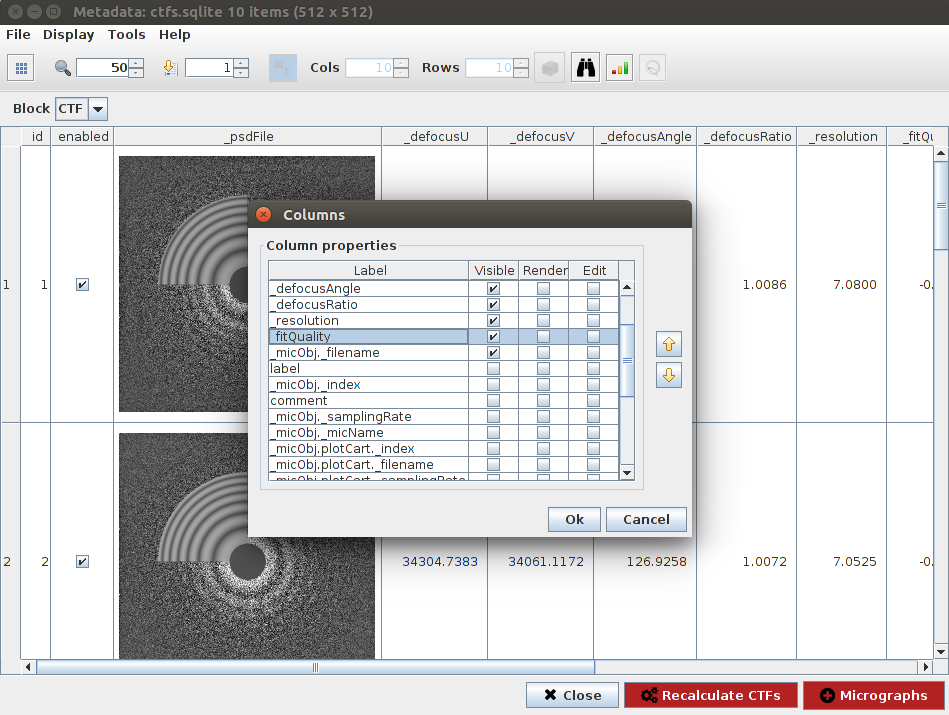

HTML report customization¶
Intro¶
We can use the summary monitor to track a number of things while our input protocols run: it encapsulates the CTF Monitor, the system monitor and the movie gain monitor. All these monitors have some graphs that we can check in the HTML Report. Here we will focus on the technical details of the HTML report and the options we have to customize it using some examples.
0. Before we start¶
We’ll get started with an environment variable so that you can directly copy and paste all commands in this guide. Replace the values with the right path for your Scipion installation.
$ export SCIPION_DIR=/usr/local/scipion
You’d also need a project with a Monitor Summary executed. We’ll use the result of running scipion demo. If you don’t have it yet, run scipion demo in your terminal:
$ scipion demo
Open the directory of Scipion as a PyCharm project (or the editor of your choice).
1. Changing the logo¶
The html code used by the summary monitor is in pyworkflow/templates/execution.summary.template.html. If we want to use a customized version, we’ll have to modify this file. It’s always a good idea to keep a copy of the original:
$ cd $SCIPION_DIR
$ cp pyworkflow/templates/execution.summary.template.html pyworkflow/templates/execution.summary.template.original.html
Now we open pyworkflow/templates/execution.summary.template.html. to locate the logo and replace the url. We must choose a logo-sized image, otherwise it’ll change the layout of the page:
<BODY>
<a id='refreshBtn'
data-toggle="tooltip" title="Toggle auto refresh" data-placement="bottom"
href="#" class="btn btn-info btn-lg">
<span class="glyphicon glyphicon-refresh"></span>
</a>
<DIV id="content" class="clearfix container">
<H1><img class="valign" src="https://upload.wikimedia.org/wikipedia/commons/thumb/7/7f/Logo_CNB.jpg/120px-Logo_CNB.jpg"> Project %(projectName)s </H1>
<DIV class="row">
<DIV class="column column-5">
If our summary monitor is running, the next time it refreshes it should have the new logo. If it isn’t running, we can make a copy of the protocol to see the new HTML.
Right click on the summary monitor and choose copy:

Adjust the refresh time to a lower amount, so it finishes quicker. Then launch protocol:

Click on Analyze results -> open html report to see the report with the new logo:


2. Removing a column from the table¶
In this example we will remove the DefocusU column from the table:

To do this, we have to go one step further and dig into the javascript code of the html report, which you can find after the closing of </body>. The first bit of code we find is the variable report. This variable has a few %(keywords)s, which are used by Scipion to transfer data from the protocols watched by the Summary Monitor to the HTML report.
var report ={
date:"%(dateStr)s",
project:"%(projectName)s",
scipionVersion:"%(scipionVersion)s",
acquisition:[
%(acquisitionLines)s
],
runs:[
%(runLines)s
],
ctfData: %(ctfData)s,
movieGainData: %(movieGainData)s,
systemData: %(systemData)s
}
Then, we have a bunch of Javascript functions. It is a good idea to take a look at the populateReport(), function, which has the high level functions responsible of each visible section in the HTML report. In our case, we’ll want to go check addMicTable().
function populateReport(){
addAcquisition();
addRuns();
addCTFChart();
addMovieGainChart();
addSystemChart();
addMicTable();
};
Remove the column name from the header:
if ('defocusU' in report.ctfData){ cols.push( // {"title": "DefocusU (µm)", // "render": $.fn.dataTable.render.number( ',', '.', 2)}, {"title": "Astigmatism (µm)", "render": $.fn.dataTable.render.number( ',', '.', 3)}, ...
Don’t add DefocusU data to the rows:
if ('defocusU' in report.ctfData){ rowValues.push( // report.ctfData.defocusU[index]*1e-4, report.ctfData.astigmatism[index]*1e-4, report.ctfData.resolution[index], ...
Re-run the summary monitor, check the table and voila! Defocus column is gone:

3. Adding a column to defocus table¶
In this section, we’ll add the fit quality value to the micrograph table. As we have seen in the beginning of the previous example, the template has some keywords that are used by Scipion to provide data to the HTML report. In this example, we’ll see where Scipion generates that data and modify it. Pay attention to the last step of example 2: the data of the defocusU column is accessed with report.ctfData.defocusU[index]*1e-4. In the report variable, we see that ctfData is assigned a keyword to be replaced by Scipion:
pyworkflow/templates/execution.summary.template.html:
var report ={
date:"%(dateStr)s",
project:"%(projectName)s",
scipionVersion:"%(scipionVersion)s",
acquisition:[
%(acquisitionLines)s
],
runs:[
%(runLines)s
],
ctfData: %(ctfData)s, // we need to find how does scipion generate this ctfData
movieGainData: %(movieGainData)s,
systemData: %(systemData)s
}
The place where Scipion performs the replacement of all the %(keywords)s is in pyworkflow/em/protocol/monitors/report_html.py.
First, we can take a look at which data is available in the monitor’s input protocols. In our case, the fit quality is in the SetOfCtf. We can click on CTFFIND’s `Analyze results` button to open its output (or double click in any output set). Then we can inspect all the data available for this set by clicking on Display -> Columns.
Next, we need to add the _fitQuality field to ctfData. Lets look for it in report_html.py:
args = {'projectName': projName, 'startTime': pwutils.dateStr(project.getCreationTime(), secs=True), 'dateStr': pwutils.prettyTime(dt=tnow, secs=True), 'projectDuration': pwutils.prettyDelta(tnow-project.getCreationTime()), 'projectStatus': "FINISHED" if finished else "RUNNING", 'scipionVersion': os.environ['SCIPION_VERSION'], 'acquisitionLines': acquisitionLines, 'runLines': runLines, 'ctfData': ctfData, ############## WE LOOK FOR THIS ################## 'movieGainData': movieGainData, 'systemData': systemData, 'refresh': self.refreshSecs }
ctfData = json.dumps(data) ####### NOW WE LOOK FOR "data" ########
data = {} if self.ctfMonitor is None else self.ctfMonitor.getData() ####### Lets check whats in this getData() ########
pyworkflow/em/protocol/monitors/prototol_monitor_ctf.py
def getData(self): def get(name): try: self.cur.execute("select %s from %s" % (name, self._tableName)) except Exception as e: print("MonitorCTF, ERROR reading data from db: %s" % os.path.join(self.workingDir, self._dataBase)) return [r[0] for r in self.cur.fetchall()] data = { 'defocusU': get('defocusU'), 'defocusV': get('defocusV'), 'astigmatism': get('astigmatism'), 'ratio': get('ratio'), 'idValues': get('ctfID'), 'resolution': get('resolution'), 'fitQuality': get('fitQuality'), ###### FIT QUALITY IS ALREADY HERE!!! YAY ######## 'imgMicPath': get('micPath'), 'imgPsdPath': get('psdPath'), 'imgShiftPath': get('shiftPlotPath') } # conn.close() return data
Now we just need to add it at the same place where we previously deleted de DefocusU.
First we add a name for the column:
pyworkflow/templates/execution.summary.template.html:
if ('defocusU' in report.ctfData){ cols.push( {"title": "Fit Quality", "render": $.fn.dataTable.render.number( ',', '.', 2)}, {"title": "Astigmatism (µm)", "render": $.fn.dataTable.render.number( ',', '.', 3)},Then add data to the rows:
if ('defocusU' in report.ctfData){ rowValues.push( report.ctfData.fitQuality[index], report.ctfData.astigmatism[index]*1e-4, report.ctfData.resolution[index],
Run the summary again and check that we have our new column: